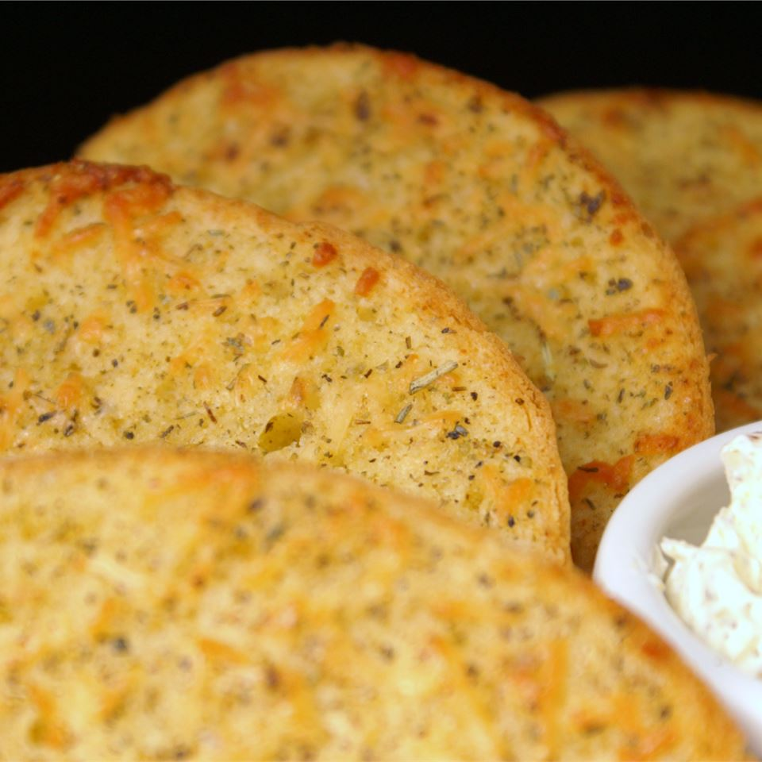

Garlic Bread

Description
This is a recipe I came up with myself. It is great with most Italian dishes. It can be doubled as needed.
Ingredients
1/4 teaspoon dried rosemary
1/8 teaspoon garlic powder
1 tablespoon grated parmesean cheese
1 loaf french bread, halved lengthwise
Directions
Preheat oven to 300 degrees F
In a small bowl, mix butter, garlic salt, rosemary, basil, thyme, garlic powder, and Parmesean cheese
Spread each half of the French bread with equal portions of the butter mixture. Sprinkle with additional Parmesan cheese, if desired.
Place bread halves, crusts down, on a medium baking sheet. Bake in the preheated oven 10 to 12 minutes, or until the edges are very lightly browned.